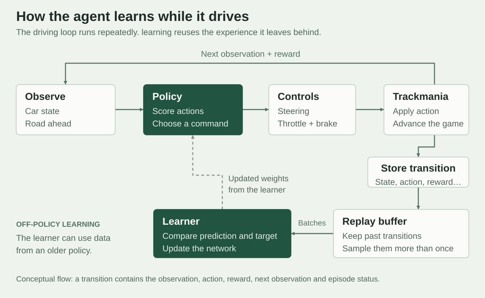

How do you teach a car to race?
In reinforcement learning, a program learns by trying actions and seeing what follows. In Trackmania, the program is the driver and the game is its environment. At each decision it receives an observation, chooses steering and pedal inputs, and gets a new observation together with a numerical reward.
The reward describes what I want it to do: make progress, finish, and do it quickly. I do not label every corner with the correct steering angle. The network has to discover which sequences of actions earn a good result. Braking before a corner can be the right decision even when accelerating gives more progress in the next instant. That is why the learning target includes future rewards, usually discounted so that more distant outcomes count less.


For the geometry-based model in this article, an observation describes the car's motion and the shape of the road ahead. The driver makes 20 decisions per second. I save each transition—what it saw, what it did, the reward and what happened next—in a replay buffer. Training samples that history repeatedly, so an expensive second of gameplay can contribute to more than one update.
Early in training, the driver needs exploration: trying controls it would not yet choose as its best option. Later, I evaluate it without that extra randomness. A policy is simply the rule that turns an observation into an action; learning changes that rule. The rest of this article is about how I built one that could finish quickly and reliably, and how often an apparently promising change failed that test.
Starting with TMRL
The first surviving commit in my part of the repository is from July 24, 2023: “Updating tmrl-trackmap to the latest version of tmrl.” That is a fairly accurate description of how this began. I was modifying an existing racing framework, trying different inputs and networks, and fixing the pieces between the game and training.
TMRL provided the starting point: a way to run reinforcement learning against a real-time game. The agent observes the car and road, chooses steering and pedal inputs, then learns from what happens next. The awkward part is that the game keeps moving while the rest of the system does its work.
The early commits are full of practical changes. In August I fixed a replay-buffer problem that was saving six elements where forty were expected. There were changes to the telemetry interface, Q-functions and model outputs. TQC appeared in the experiments in August and September. By October I had added an API-only model, with a commit message that states the reason plainly: increase training speed.
This was the beginning of a question that kept returning: how much of the driving problem should the network infer from an image, and how much should I describe explicitly? Telemetry and track geometry are useful shortcuts. They expose speed, orientation and the road ahead in a form that a relatively small model can process. They also make the setup dependent on having those inputs for the map.
At the end of 2023 I explored n-step returns, image-free training, an IMPALA experiment environment and R2D2-style recurrent learning. In January 2024, another commit replaced an LSTM with a GRU and removed an attention layer. Some of these experiments helped; others disappeared as the code changed. The original TMRL authors built the foundation. I took it from there, doing the experiments, debugging and eventual rewrite into TrackmaniaRL. [1]
- TMRL experimentsTelemetry, TQC, API-only inputs, n-step and recurrent models.
- Back to trainingIQN tuning, experiment configuration, reward and replay work.
- A reusable runtimeFrozen evaluation, demonstrations, actor/learner separation; first TrackmaniaRL release.
- Consistency and new inputsGraph-based driving, recovery experiments, the sub-37 confirmation, and camera-based work.
Why I settled on IQN
A driver needs some way to decide whether steering left now is better than holding its line. A value-based method learns a score for each action: the reward it expects to collect from that decision onward. An actor–critic method also learns a separate policy—the actor—which proposes controls, while a critic estimates how good they are.
IQN, or Implicit Quantile Networks, learns a distribution of returns for each action. Instead of only predicting an average, it can estimate different quantiles: lower, middle and upper parts of the return distribution. The network receives a sampled quantile level along with the state representation. This gives it a richer learning target than a single-value estimate. My controller averages its evaluation quantiles to score actions; using IQN does not, by itself, make the driver risk-averse.


In this project I use 78 combinations of steering and pedals. IQN can score all of them in one batched network evaluation. That made the controls easy to inspect and later made the reference-action filter straightforward: restrict the available choices, then take the highest score. There is no separate learned continuous actor to optimize. Discretization gives up arbitrary control precision, but this action set was enough for the confirmed result.
| Method | What it learns | What that means here |
|---|---|---|
| DQN | One expected return per discrete action. | A simpler value head; it does not describe the shape of the return distribution. |
| IQN | A quantile function for each discrete action. | Ranks the full action set and works directly with a filter on those choices. |
| SAC Soft Actor-Critic | A stochastic actor and critics, with an entropy term that encourages exploration. | The classic formulation selects continuous controls. It offers finer action precision, with a separate policy objective to train. |
| TQC Truncated Quantile Critics | A continuous actor and several distributional critics. Their largest target quantiles are discarded. | Addresses overoptimistic values; it is also distributional, so that feature is not unique to IQN. |
| PPO Proximal Policy Optimization | A policy updated on recently collected rollouts, with an objective that limits large policy changes. | Reuses a fresh batch for several updates, rather than training on a long-lived off-policy replay buffer. |
SAC and TQC also reuse replay data. That advantage over a fresh-rollout approach matters when collecting experience means waiting for an actual game, but it does not distinguish IQN from them. Discrete versions of SAC exist too; the comparison above describes the usual continuous-control formulation. [10] [11]

IQN stayed because it fit the discrete controls, gave me action values I could inspect, and became the basis of my best confirmed controller. TQC was part of the earlier experiments, but I changed observations, rewards and runtime along the way. I do not have an equal-budget comparison that would establish IQN as inherently better than SAC or TQC. I do have a working reason to keep it, and the library leaves those alternatives available.
Returning to the experiments in 2026
The next substantial work in the surviving history starts in February 2026: updating the fork, changing dependencies, trying residual actor–critic models and documenting a two-actor setup. By April and May, I was spending more time making experiments easier to run. Configuration and component registries made it easier to change an algorithm without maintaining a separate training program for each attempt.
The experiment logs fill in what the commits leave out. In May and June I tried faster exploration decay, larger batches, lower learning rates, longer learning targets, gradient clipping and different target-network update schedules. There are 681 logging records across the inspected history. Some are trainer/worker pairs, evaluations or restarts; they are not 681 independent experiments. The evidence notes link selected runs to their dates.
The May 13 baseline already combined a graph track encoder, IQN and a SimbaV2-style backbone without recurrence. Late May and early June brought changes to road sampling, lookahead and exploration. A Conv1D recovery baseline appeared on June 7. The final model was taking shape months before the package release.
It is easy to draw the wrong conclusion from a dashboard. A run marked “crashed” may have been interrupted; it does not mean the car never finished. A summary value may describe the last episode rather than the whole run. Some early experiment reports had to be corrected after checking the full history: sampled charts had missed successful finishes.
I also tried adding Munchausen reward terms and penalties intended to keep IQN’s quantiles ordered. Looser settings could inflate Q-values; stronger regularization could make the values look much better while the car still made little progress. Removing complications and checking actual driving was often more useful than finding another way to make a loss curve look tidy.
The Git and W&B dates do not always line up exactly. For example, a June commit archives experiments recorded in May. In the timeline here, a run date means when the experiment was logged; a commit date means when the code or report entered Git. I have only treated a run as tied to an exact revision when the evidence supports that link. [2]
What the training curves missed
One of the clearest examples came in July. In one set of experiment notes, the training finish rate improved from 32% to 82% and then 84%. Frozen evaluation moved in the opposite direction: nine finishes in ten attempts, then eight, then one.
There was a concrete reason to distrust the comparison. During training, an actor could load new weights roughly every five seconds. A completed lap could therefore contain decisions from several versions of the policy. Frozen evaluation tested a single version. Meanwhile, rollout data could sit in a queue for about 100–115 seconds before being learned from.
The fixes were mostly about the runtime: keep one policy throughout an episode, drain the rollout backlog, preserve more replay history and save the checkpoint that actually performed best in evaluation. The notes also suspected that replay had lost useful early failure states. That explanation is plausible; the mismatched policy versions and delayed data were directly observable. [3]
Some failed runs were implementation bugs
Later, an exploration bug provided a particularly expensive example. Exploration was nominally at its maximum, but 85% of random actions kept the pedal mode preferred by the untrained network. In that run it preferred the brake. The first 414 episodes barely moved. Calling this evidence against IQN or the encoder would have missed the point: the exploration code was not doing what the configuration suggested.
Another investigation exposed a replay bottleneck. The learner was spending much of its time constructing replay samples. With a 20-step return, a batch could involve thousands of Python transition objects. The recorded replay benchmark dropped from 106.3 to 22.2 milliseconds per sample operation after a columnar fast path was introduced. That did not make a cleverer driver by itself, but it made the requested training schedule feasible. [4]
These problems changed what I wanted from the project. Swapping neural networks was useful, but I also needed to know that observations, actions, episode boundaries and updates meant the same thing throughout the system.
Chasing a reliable 37 seconds
By September the car could already produce quick laps on the test track. The remaining problem was the occasional bad corner: a wall contact, a long slowdown, or a failed recovery that spoiled the average.
Before trying to fix that with architecture, I had to look at the reward. One experiment note compares a 37.18-second lap with a 39.39-second lap. The slower one received the higher return: 347.23 rather than 346.21. Both recorded the same number of contact flags. More accumulated progress-related reward had outweighed the time difference.
The next run added an explicit finish-time term, 2 × (35 − finish time), to that experiment's reward. It warm-started the existing model and began with fresh replay. At roughly 297,000 additional transitions, a five-lap evaluation averaged 36.962 seconds. Across the run’s ten recorded evaluation batches, 47 of 50 attempts finished. This was a useful result, but not yet the later 30-attempt confirmation. Several things changed together, so it is evidence for the revised training setup rather than a clean reward-only ablation. [5]

More information helped; more complexity did not always help
A context adapter added road-relative information to an already trained base: position across the road, edge clearance, sideslip and a speed-dependent view of upcoming curvature. In the recorded comparison with the base model, both configurations finished all 30 attempts. The mean fell from 38.544 to 37.842 seconds, and the 95th-percentile time fell from 46.830 to 42.090 seconds. The typical lap changed much less. The useful difference was in the slow laps.
Several attempts to remove the remaining slowdowns were less successful. Making action changes harder with a Q-value margin delayed corrective steering. Extending the learning target from five to twenty decisions produced a 36.28-second lap—but the average in that same ten-lap batch was 42.04 seconds. A recurrent recovery adapter could disturb the ordinary racing line as well as help with an incident. Continued training sometimes made the controller worse.
| What changed | What happened | What I kept from it |
|---|---|---|
| Bounded context adapter | 30/30 finishes; mean 37.842 s versus 38.544 s for the recorded baseline. | Useful road-relative features could reduce the slow tail. |
| Q-switch margin 0.020 / 0.005 | 9/10 at 38.937 s; 10/10 at 39.100 s. | Holding an action longer could delay a needed correction. |
| Longer n-step target | Best lap 36.28 s; the same batch averaged 42.04 s. | The fastest single lap was a poor checkpoint-selection rule. |
| GRU recovery adaptation | From 10/10 at 38.902 s to 5/10 at 57.878 s among finishes. | An always-active correction could damage a good base policy. |
| Incident-gated recovery | 29/30; mean of finishes 38.782 s. | Restricting corrections was safer, but still missed the target. |
| State-conditioned action support | Fresh 30/30; mean 36.977 s. | A small, explicit restriction helped the already-fast policy make fewer costly choices. |
The context-adapter comparison also includes a procedure failure: the game initially remained on its replay screen. The report preserves those timeouts and explains how the valid blocks were collected. They are not silently relabelled as policy failures or erased from the record. [6]
The change that passed confirmation
The configuration that finally passed kept the incident-gated network unchanged. It added neighbors, a filter built from complete episodes already in the checkpoint's replay. On the difficult part of the track, it looked for similar states and limited the network to actions found in that neighborhood. The network still chose the highest-scoring action from that set.
This differed from forcing a recorded input at a fixed percentage of the track. Similarity included the car's motion and road position, so the restriction depended on the situation. If the car was too slow or too far from the reference states, the filter fell back to the ordinary policy. The references were fixed before the benchmark; the benchmark laps were not added to them.

All 30 times and telemetry skips
| Attempt | Time (s) | Skipped frames |
|---|---|---|
| 1 | 37.010 | 18 |
| 2 | 37.040 | 8 |
| 3 | 36.740 | 5 |
| 4 | 36.700 | 6 |
| 5 | 36.960 | 6 |
| 6 | 36.710 | 4 |
| 7 | 36.820 | 5 |
| 8 | 36.960 | 16 |
| 9 | 36.900 | 19 |
| 10 | 36.840 | 6 |
| 11 | 36.830 | 8 |
| 12 | 36.950 | 10 |
| 13 | 36.840 | 2 |
| 14 | 36.750 | 5 |
| 15 | 37.010 | 9 |
| 16 | 36.750 | 18 |
| 17 | 36.670 | 9 |
| 18 | 36.730 | 12 |
| 19 | 36.890 | 2 |
| 20 | 36.750 | 2 |
| 21 | 36.940 | 4 |
| 22 | 36.700 | 3 |
| 23 | 36.790 | 3 |
| 24 | 36.690 | 9 |
| 25 | 36.920 | 6 |
| 26 | 41.370 | 232 |
| 27 | 36.590 | 10 |
| 28 | 36.880 | 8 |
| 29 | 36.560 | 5 |
| 30 | 37.010 | 8 |
That is why I call it my strongest confirmed configuration on this track. It met the actual objective—30 finishes and a mean below 37 seconds—rather than merely setting a new best lap. It still had a slow attempt, and the series recorded 458 skipped telemetry frames. The filter reduced the slow laps, but did not eliminate them.
The model I ended up using
The driving system in the film has a geometry-based graph encoder, a branch for the car's motion, small context and recovery adapters, a SimbaV2-style backbone and a dueling IQN head. It has about 1.64 million parameters. There is no GRU—a gated recurrent unit that carries memory between decisions—in this configuration. I removed that branch after the recovery experiments became less consistent.
What SimbaV2 contributes
SimbaV2 is a way to build the network, not a competing action-selection algorithm. Its key idea here is to keep feature vectors and weight vectors at a controlled length. A residual block learns how much of a transformed representation to mix with its input, then normalizes the result again. The extra constant input preserves magnitude information that would otherwise be lost when a vector is normalized.

The paper’s complete method also includes input standardization, a distributional critic and reward scaling, and was evaluated with SAC. My model adapts the backbone ideas, including projecting weights back to unit length after updates, and connects them to its own geometry encoder and IQN head. The figure explains the source of those ideas; the diagram below shows the actual racing model.

Road and car are processed separately
The road input represents 44 ordered stations ahead of the car. Each station has six values describing left, center and right positions in the car's frame. The stations form the nodes of a graph. Two message-passing steps let each node combine its features with those of its neighbors. Pooling and a projection produce a 192-value road representation.
The car branch turns 60 motion and driving features into another 192-value vector. These include speed components, yaw rate, acceleration, road-relative heading, previous controls and curvature samples. A 29-feature context branch adds a small, bounded correction to it. This makes the additional information available without allowing a new adapter to overwrite the representation arbitrarily.
There is also an ordered Conv1D branch in this checkpoint. It processes the road with four dilated residual blocks. It is tempting to point to that extra branch as a reason the model works, but the recording gives a useful counterexample: its final correction is exactly zero at every one of the 733 captured decisions. Its internal activations are nonzero; its contribution to the fused road vector in this lap is not.
Fusion, recovery and action values
The two 192-value vectors are concatenated. My implementation adds a constant channel, projects the result back to 192 values and processes it through four residual blocks with 768-wide expansions. It uses the normalized features and learned residual interpolation described above. The experiment history does not isolate how much lap time this backbone saved by itself.
An eight-feature recovery branch can then add a small correction when both a sustained incident signal and retained speed loss activate its gate. The incident signal decays over time. It is a deliberately limited memory of trouble, not a general recurrent hidden state.
Finally, the dueling IQN head evaluates 78 discrete actions. “Dueling” means it combines a value for the state with an advantage for each action: how much better or worse that action is relative to the others. At evaluation it uses 32 quantiles to estimate returns, then reduces them to action scores. The 78 choices combine 13 steering levels with six throttle/brake combinations, including timed brake taps. The controller selects an action on a 20 Hz decision grid.
The neighbors filter is outside the network. In the historical configuration it applies over 54–90% of the route, queries 15 nearby reference states and falls back outside its support. This is a map-specific addition, not a learned universal safety mechanism. The reason to keep it was practical: the fixed system passed the confirmation that several more complicated alternatives had failed.
I kept this combination because it passed the test I cared about: thirty finishes with a mean below 37 seconds. The geometry features, bounded corrections and action filter worked together. That result is stronger evidence than the complexity of the diagram, and it applies to the track and conditions I tested.
Why it became a library
Across these experiments, I kept changing observations, models, rewards, replay and evaluation. The recurring work was connecting them correctly. TrackmaniaRL grew out of separating those responsibilities so a new experiment would not require another version of the whole training loop.
The current code is an extensive rewrite of the original TMRL fork. It has its own public API and does not use TMRL as a runtime package. The attribution remains because the starting point matters.
A run specification assembles an environment, feature pipeline, model, sampler, learner and logger. The model itself separates frame encoding, temporal processing and value estimation. An off-policy actor can collect in one process or machine while a learner trains elsewhere. A durable journal and checkpoints make it possible to recover the state of that work. PPO follows its own local on-policy lifecycle.
These boundaries map directly to earlier problems. Episode-local replay protects sequence histories. Freezing an actor's policy makes an episode interpretable. Checkpoint fingerprints prevent an incompatible resume from looking like a continuation. Keeping every benchmark attempt makes a quick clip less likely to turn into an exaggerated result.
The first TrackmaniaRL release arrived in August 2026. September brought RunSpec 2.0, further work on camera inputs and demonstrations, and many less visible correctness fixes. The package supports more algorithms than I would choose for one racing experiment. That is the point of the library: the next comparison should be easier to run, even if it disproves the current favorite. [9]
Where the project goes next
The geometry-based network with the reference-action filter is still my best confirmed setup. Its main limitation is where I can use it. In my experience, only a minority of maps have complete track edges that I can record by driving. When those boundaries are missing or incomplete, the road input this model relies on is not available. That is the main reason for the camera-based work: I want to handle more maps, not replace the current model because vision has already proved faster.
The newer camera-based work is a separate branch of the research. A convolutional network with a GRU on another test map recorded a ten-attempt evaluation with ten finishes, a 29.60-second best and a 31.22-second median. Those numbers belong to a different map and a continued training history; they cannot be placed below the 36.977-second result and called an improvement.
Fresh camera pilots have been much less settled. The local research notes report only 3–6 finishes per 30 attempts after short 200,000-transition runs, depending on configuration and seed. They do not yet settle whether the recurrent model or a four-frame stack is the better choice.
For now, the geometry-based controller remains the clearest completed result in this story, while the camera work is meant to extend coverage to maps where recording the required boundaries is not practical. The library gives me a place to investigate that without starting over each time. The next tests need to establish how much performance survives that change in inputs, across maps where the geometry-based model cannot be set up.
Sources and recordings
This draft combines the Git history, W&B records read for this revision, tracked benchmark reports and local research notes. Implementation links are pinned to 556adeef; later, uncommitted research is identified separately. Evidence notes and timeline links record the distinctions.
- July 2023 TMRL update; October API-only model; February 2026 model work.
- W&B experiment logs: early tuning, observation and model experiments, runtime and driving evaluations. Account access may be required. Selected records and dates.
- Frozen-policy stability investigation, preserved at its historical revision.
- Exploration and update audit; Replay performance audit.
- Reward experiments: local journal
SUB37.mdand time-aware reward run. Local evidence provenance. - Context-adapter comparison and recovery experiments.
- Complete experiment ledger and 30-trial confirmation.
- Neural-flow model and capture audit; evaluated configuration.
- Lineage and credits; release history; library contracts.
- Haarnoja et al., Soft Actor-Critic: Off-Policy Maximum Entropy Deep Reinforcement Learning with a Stochastic Actor, ICML 2018.
- Schulman et al., Proximal Policy Optimization Algorithms, 2017. IQN, TQC and SimbaV2 papers are linked beside their reproduced figures; full figure credits.
Related writing
The articles that helped set the direction for this piece: Anisha Bhatnagar and Ashwin Kumar Udayakumar's TMRL experiments, Pierre Porcher's introduction to RL and description of PedroAI, and the Hall of Impossible Dreams Trackmania series. Their results are separate from mine.